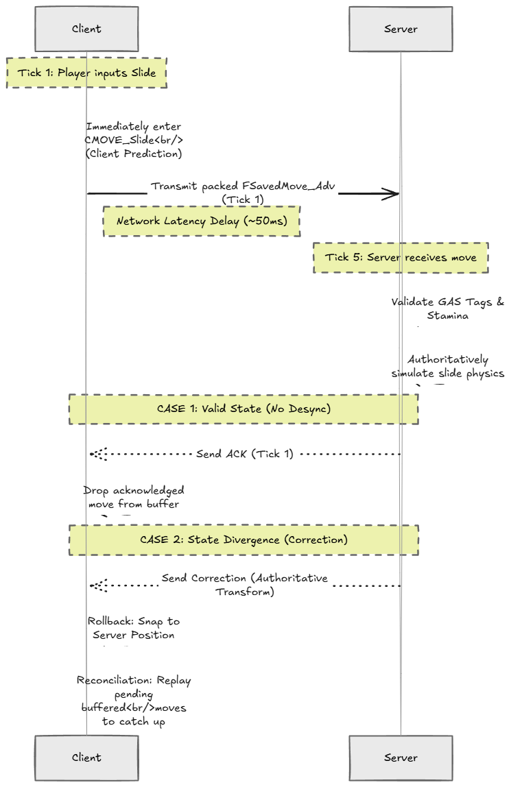
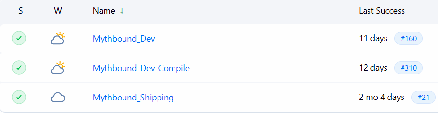
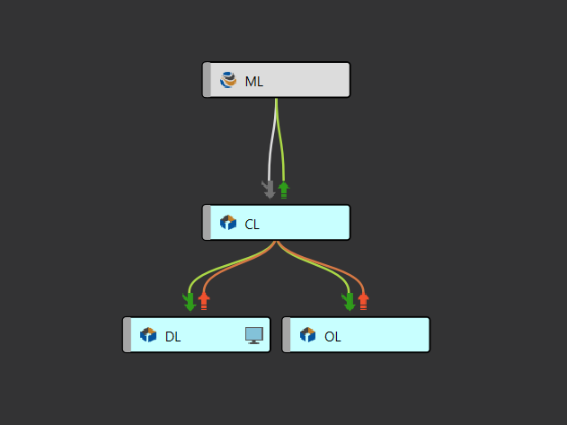
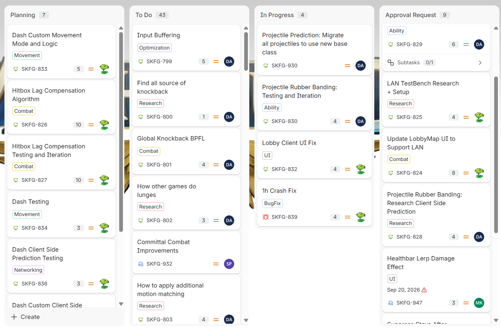

Mythbound
Prototyping & Implementing Slide Mechanics
Extending Character Movement Component
Our designers needed a slide that would be used as a way to allow macro movements across the map.
Hence, I built a custom CMOVE_Slide mode that controls the entire movement lifecycle natively. It uses vector dot products to prevent uphill sliding, projects entry velocity flush against the floor normal to prevent bouncing, injects continuous downhill gravity, and overrides the base jump function to allow momentum-preserving slide-jumps.
// Prevent sliding up steep ramps using Dot Products
bool UAdvMovementComponent::CanSlide(FHitResult& SlideSurface, bool bForStateEnter) const
{
// ... [Line trace logic to find surface] ...
// A negative dot product means velocity is pointing into the slope
float SlopeDot = FVector::DotProduct(Velocity.GetSafeNormal2D(), SlideSurface.ImpactNormal);
bool bIsUphill = SlopeDot < -0.1f;
bool bSufficientVelocity = Velocity.SizeSquared() > FMath::Square(SlideEnterSpeed);
return (!bForStateEnter || (bOnSlideSurface && !bIsUphill)) && bSufficientVelocity;
}
// Project velocity perfectly along the slope
void UAdvMovementComponent::OnEnterSlide()
{
// Enforce minimum entry burst speed
if (Velocity.SizeSquared2D() < FMath::Square(SlideEnterImpulse)) {
Velocity = Velocity.GetSafeNormal2D() * SlideEnterImpulse + Velocity.Z * FVector::UpVector;
}
// Prevent clipping/bouncing by projecting velocity onto the floor impact plane
if (CurrentFloor.bBlockingHit) {
Velocity = FVector::VectorPlaneProject(Velocity, CurrentFloor.HitResult.ImpactNormal);
}
}
// Inject downhill acceleration
void UAdvMovementComponent::PhysSlide(float DeltaTime, int32 Iterations)
{
// Gain speed on slopes
FVector SlopeForce = CurrentFloor.HitResult.Normal;
SlopeForce.Z = 0.f;
Velocity += SlopeForce * SlideGravityForce * DeltaTime;
// Apply custom sliding friction natively
CalcVelocity(TimeTick, GroundFriction * SlideFrictionFactor, false, GetMaxBrakingDeceleration());
// ... [MoveAlongFloor execution] ...
}
// Preserve momentum into an aerial launch
bool UAdvMovementComponent::DoJump(bool bReplayingMoves)
{
if (IsCustomMovementMode(CMOVE_Slide) && SlideJumpTimingWindowDuration > 0)
{
// Apply momentum multiplier to launch the character
Velocity.Z = FMath::Max(Velocity.Z, JumpZVelocity * SlideJumpMultiplier);
SetMovementMode(MOVE_Falling);
OnSlideJumpDelegate.Broadcast();
return true;
}
} State Coordination via Gameplay Ability System
While C++ manages the physics simulation, GA_Slide handles the state machine. It validates stamina costs and applies the State.Movement.Sliding tag to lock out conflicting abilities until the CMC function signals the slide has ended.
Client Side Prediction for Slide
Zero-Latency Responsiveness
In a fast-paced arena brawler, waiting for server round-trips to initiate high-speed slides or modify capsule collision makes combat feel unresponsive. However, locally predicting custom physics without reconciling state with the server leads to aggressive correction snaps and rubberbanding.
To make movement feel instantaneous regardless of ping, I extended Unreal's FSavedMove_Character pipeline to store, compress, and replay our custom slide and movement parameters across the network.

SavedMove Replication Lifecycle
The client simulates and applies PhysSlide immediately while pushing the move into an unacknowledged move buffer.
-
Step 1 (Client Sim): Enters
CMOVE_Slidelocally and packages serialized movement variables intoFSavedMove_Adv. - Step 2 (Network Dispatch): Sends compressed input flags across latency to the authoritative server.
- Case 1 (Valid State): Server validates GAS stamina tags, runs physics, and sends an ACK. The client drops the acknowledged move buffer with zero position snap.
- Case 2 (State Divergence): If the server detects a desync, it transmits the authoritative transform, rolling back the client to replay unacknowledged moves seamlessly.
Custom State Serialization & Rollback Replay
// Compress custom input states into a single replicated byte
uint8 UAdvMovementComponent::FSavedMove_Adv::GetCompressedFlags() const
{
uint8 Result = Super::GetCompressedFlags();
if (Saved_bWantsToSprint) { Result |= FLAG_Sprint; }
if (Saved_bJumpHook) { Result |= FLAG_JumpPressed; }
return Result;
}
// Snapshot custom movement variables before network dispatch
void UAdvMovementComponent::FSavedMove_Adv::SetMoveFor(ACharacter* C, float InDeltaTime, FVector const& NewAccel, FNetworkPredictionData_Client_Character& ClientData)
{
Super::SetMoveFor(C, InDeltaTime, NewAccel, ClientData);
UAdvMovementComponent* AdvMovement = Cast<UAdvMovementComponent>(C->GetCharacterMovement());
Saved_bWantsToSprint = AdvMovement->bWantsToSprint;
Saved_bPrevWantsToCrouch = AdvMovement->bPrevWantsToCrouch;
Saved_PreSlideHalfHeight = AdvMovement->PreSlideHalfHeight;
Saved_CurrentSpeedMultiplier = AdvMovement->CurrentSpeedMultiplier;
Saved_QueuedMotions = AdvMovement->QueuedMotions;
}
// Unpack saved states when replaying previous moves during server reconciliation
void UAdvMovementComponent::FSavedMove_Adv::PrepMoveFor(ACharacter* C)
{
Super::PrepMoveFor(C);
UAdvMovementComponent* AdvMovement = Cast<UAdvMovementComponent>(C->GetCharacterMovement());
AdvMovement->bWantsToSprint = Saved_bWantsToSprint;
AdvMovement->bWantsToCrouch = Saved_bPrevWantsToCrouch;
AdvMovement->PreSlideHalfHeight = Saved_PreSlideHalfHeight;
AdvMovement->CurrentSpeedMultiplier = Saved_CurrentSpeedMultiplier;
AdvMovement->QueuedMotions = Saved_QueuedMotions;
}Building the Lobby System using EOS & Common UI
UI/UX Wireframes
Before writing any widget logic in Unreal, I designed and prototyped the full lobby loop in Figma.
Lobby Creation & Match Setup
I architected our lobby infrastructure using Epic Online Services (EOS) for matchmaking, presence, and peer-to-peer session management, paired with Unreal's Common UI to handle multi-platform input routing and navigation stacks natively.
Character / Team Selection & Match Settings
To prevent race conditions, duplicate hero picks, and uneven teams, all selections are validated server-side. Selections send reliable Server RPCs to verify availability, and the host replicates changes via GameState and PlayerStatefiring OnRep delegates to update Common UI across all connected screens in real time.
Map & Game Mode Replication
Manages host-side match mutations, serializing selected game rules and arena maps across EOS session attributes and multicasting changes to all lobby members.
Build Automation using Jenkins

Continuous Integration Pipeline
To prevent corrupted Blueprints, broken C++ headers, and cook failures from stalling a multi-disciplinary team, I architected a fully automated CI/CD pipeline in Jenkins integrated with Perforce. This guaranteed build stability across active development and maintained ready-to-test packages every single morning.
On-Commit Compile
Triggered automatically on every Perforce commit to validate C++ code and Blueprint integrity before errors propagate.
Nightly Development Build
Runs an iterative cook and package at 2 AM on new changes, archiving fresh builds for morning team playtests.
Shipping Builds
On-demand release job compiling an optimized, stripped build for milestone deliverables and external testing.
Unreal AutomationTool (UAT) Pipeline Script
Our nightly packaging stage leverages multi-threaded cooking (-CookProcessCount=8) and asset iteration flags to keep build times under 15 minutes:
:: Nightly Development Package & Archive Execution
"C:\Program Files\Epic Games\UE_5.7\Engine\Build\BatchFiles\RunUAT.bat" BuildCookRun ^
-rocket -compile -compileeditor -installed -nop4 ^
-project="%WORKSPACE%/MythboundUEProject/MythboundGASP/MythboundGASP.uproject" ^
-cook -iterate -CookProcessCount=8 ^
-stage -archive -archivedirectory="%WORKSPACE%/temp/Development/x64" ^
-package -clientconfig=Development -pak -prereqs -distribution -nodebuginfo ^
-targetplatform=Win64 -build -utf8outputTechnical Lead Duties

Version Control Architecture & Merging
To prevent merge conflicts between engineering and asset bloat from external teams, I architected a multi-tier Perforce stream topology and handled cross-stream integrations, resolving binary Blueprint conflicts and ensuring clean compilation.
- Mainline: Production-ready, locked fed only by stable integrations.
- Development Stream: Daily active engineering integration and feature validation.
- Content Stream: Isolates massive artist source files (.psd, .fbx, Maya assets) from bloating programmer workspaces.
- Outsourcing Stream: Sandboxes contractor deliverables, allowing technical vetting prior to mainline merging.
Production Planning & Agile Task Scoping
As Technical Lead, I led sprint planning, requirement negotiation, and technical validation across departments. I translated high-level design aspirations into actionable technical epics, balanced engineering bandwidth, conducted code reviews, and enforced strict definition-of-done criteria to hit external milestone deadlines.

Playtesting & Technical Iteration
I partipated in continuous team playtests on fresh builds to validate systems at both levels:
- Macro (Game Flow): Evaluating arena rotations, traversal speed, and whether map chokepoints supported fluid movement.
- Micro (Combat & Ability Balance): Tuning frame windows, hit reactions, and stamina costs during live PvP engagements.
- Scope Management: Using playtest data to make decisive tuning calls instead of letting feature creep derail delivery timelines.